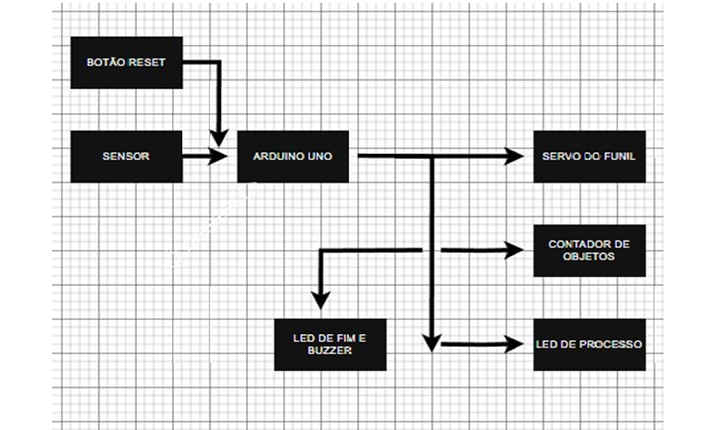
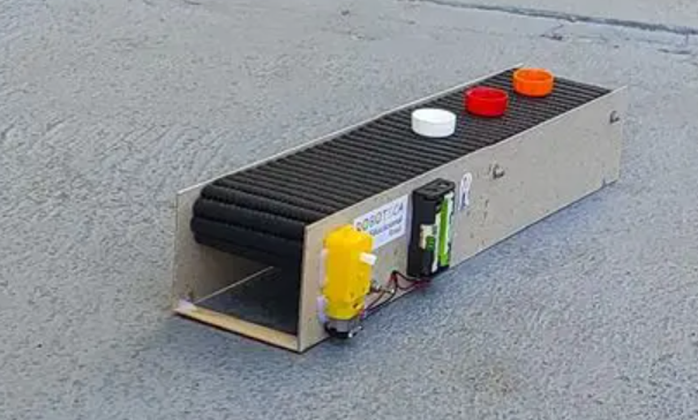
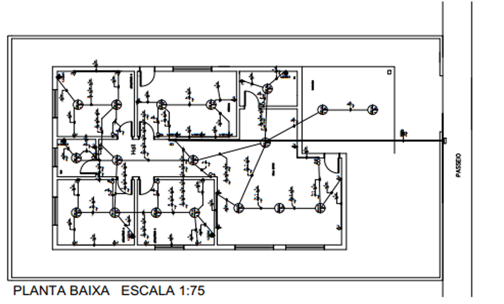
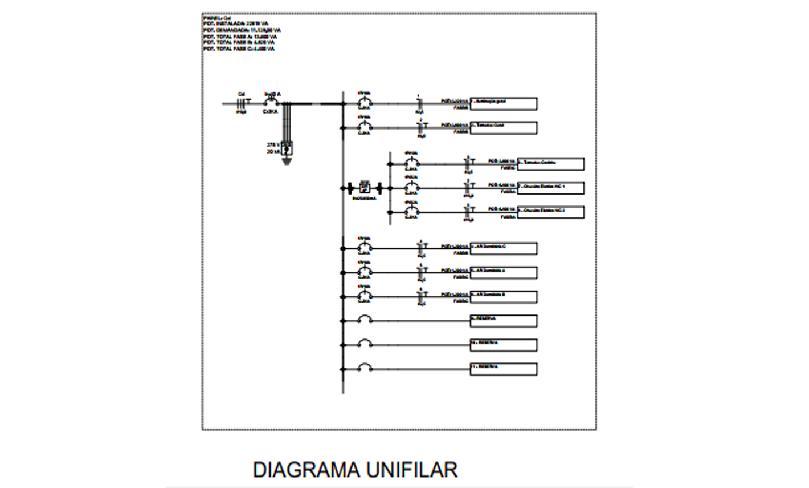
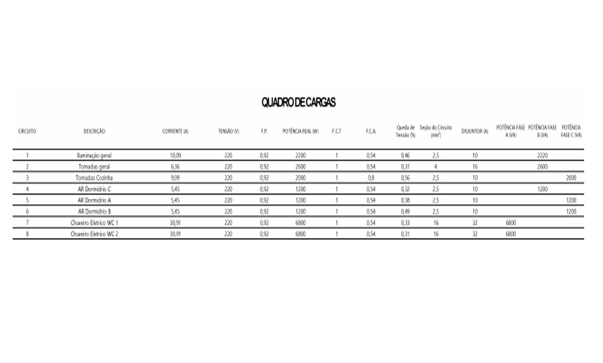
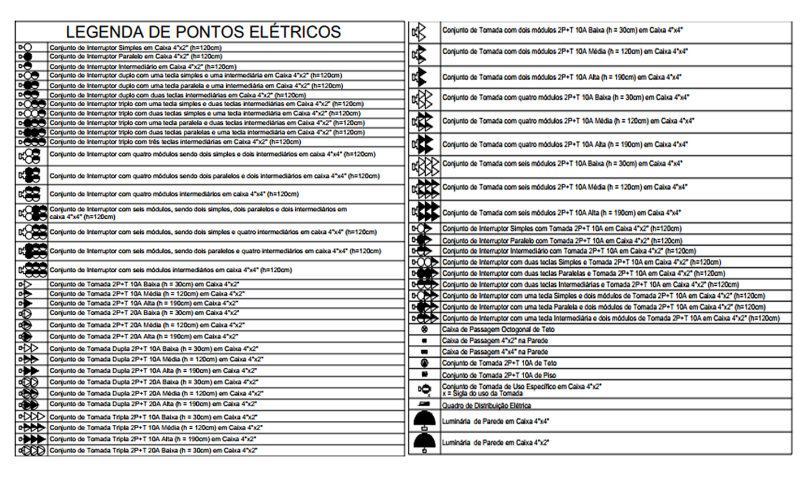
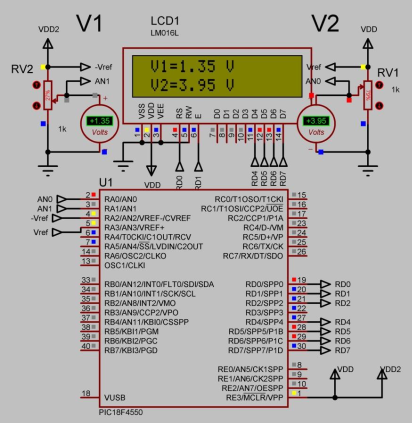
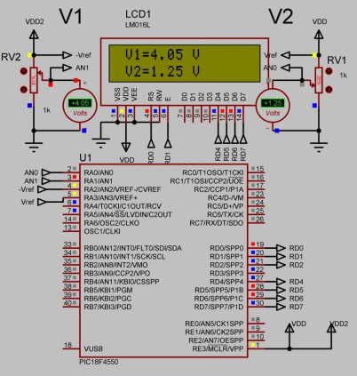

Sistema automatizado para contagem de objetos em esteira
industrial. Sensores IR detectam itens, servo realiza a liberação,
e há alerta visual/sonoro ao atingir o limite configurado.


Desenvolvimento completo de planta elétrica residencial:
dimensionamento de iluminação, tomadas e chuveiro; distribuição de
cargas, diagrama unifilar e especificação de condutores,
disjuntores, DPS e DR conforme NBR 5410.




Desenvolvimento de um voltímetro digital utilizando um microcontrolador PIC programado em linguagem C. O sistema realiza a leitura de dois canais analógicos (RA0 e RA1) por meio do conversor A/D interno, convertendo os valores em tensão e exibindo-os em um display LCD 16x2. O código inclui funções específicas para controle do LCD, configuração do ADC e formatação da saída via printf(). A simulação foi executada no Proteus, demonstrando medições precisas e atualização em tempo real das tensões. O projeto reforça conceitos de eletrônica embarcada, programação em C e integração entre hardware e software.

